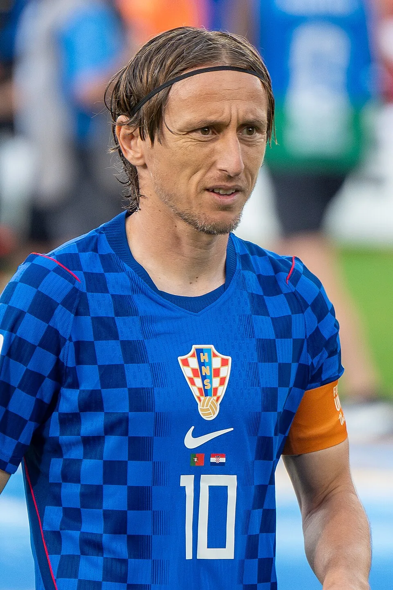

The profile
Luka Modrić
Luka Modrić was born in Zadar, in what was then Yugoslavia, and spent part of his childhood amid the Croatian War of Independence. Football became the path that took him from his hometown to Dinamo Zagreb’s youth setup.
He moved from Dinamo Zagreb to Tottenham Hotspur and Real Madrid, where his passing helped sustain years of success, before joining AC Milan in 2025. He receives the ball under pressure, turns away from opponents and changes the pace of a match with either a short exchange or a long pass. Croatia has often relied on him to set its rhythm.
Modrić led Croatia's midfield during its unexpected trip to the 2018 World Cup final. Through three demanding knockout ties that went beyond normal time, he kept the team organised and gave it a way to play forward under pressure. Croatia lost to France in the final, but his influence across the run earned him the tournament's best player award.
2006Germany Group stage
Group F Japan0 : 0Croatia
Japanhome
Starting lineup
- Yoshikatsu KAWAGUCHI
- Tsuneyasu MIYAMOTO
- Alessandro SANTOS
- Akira KAJI
- Yuji NAKAZAWA
- Hidetoshi NAKATA
- Mitsuo OGASAWARA
- Shunsuke NAKAMURA
- Takashi FUKUNISHI
- Naohiro TAKAHARA
- Atsushi YANAGISAWA
Substitutions
- 45+1′Junichi INAMOTO on · Takashi FUKUNISHI off
- 61′Keiji TAMADA on · Atsushi YANAGISAWA off
- 85′Masashi OGURO on · Naohiro TAKAHARA off
Croatiaaway
Starting lineup
- Stipe PLETIKOSA
- Josip SIMUNIC
- Robert KOVAC
- Igor TUDOR
- Dario SIMIC
- Darijo SRNA
- Marko BABIC
- Niko KOVAC
- Niko KRANJCAR
- Dado PRSO
- Ivan KLASNIC
Substitutions
- 70′Ivica OLIC on · Igor TUDOR off
- 78′Luka MODRIC on · Niko KRANJCAR off
- 87′Ivan BOSNJAK on · Darijo SRNA off
Group F Croatia2 : 2Australia
- Darijo SRNA2′
- Niko KOVAC56′
- Craig MOORE38′ · pen.
- Harry KEWELL79′
Croatiahome
Starting lineup
- Stipe PLETIKOSA
- Josip SIMUNIC
- Igor TUDOR
- Dario SIMIC
- Stjepan TOMAS
- Darijo SRNA
- Marko BABIC
- Niko KOVAC
- Niko KRANJCAR
- Dado PRSO
- Ivica OLIC
Substitutions
- 65′Jerko LEKO on · Niko KRANJCAR off
- 74′Luka MODRIC on · Ivica OLIC off
- 83′Ivan KLASNIC on · Stjepan TOMAS off
Australiaaway
Starting lineup
- Zeljko KALAC
- Lucas NEILL
- Craig MOORE
- Scott CHIPPERFIELD
- Tim CAHILL
- Jason CULINA
- Brett EMERTON
- Vince GRELLA
- Mile STERJOVSKI
- Mark VIDUKA
- Harry KEWELL
Substitutions
- 63′John ALOISI on · Vince GRELLA off
- 71′Mark BRESCIANO on · Mile STERJOVSKI off
- 75′Joshua KENNEDY on · Scott CHIPPERFIELD off
2014Brazil Group stage
Group A Brazil3 : 1Croatia
- NEYMAR28′
- NEYMAR70′ · pen.
- OSCAR90′
- MARCELO10′ · own goal
Brazilhome
Starting lineup
- JULIO CESAR
- DANI ALVES
- THIAGO SILVA
- DAVID LUIZ
- MARCELO
- PAULINHO
- OSCAR
- LUIZ GUSTAVO
- HULK
- Fred
- NEYMAR
Substitutions
- 62′HERNANES on · PAULINHO off
- 67′BERNARD on · HULK off
- 87′RAMIRES on · NEYMAR off
Croatiaaway
Starting lineup
- Stipe PLETIKOSA
- Sime VRSALJKO
- Vedran CORLUKA
- Dejan Lovren
- Darijo SRNA
- Ivan PERISIC
- Ivan RAKITIC
- Luka MODRIC
- Mateo KOVACIC
- Nikica JELAVIC
- Ivica OLIC
Substitutions
- 60′Marcelo BROZOVIC on · Mateo KOVACIC off
- 77′Ante REBIC on · Nikica JELAVIC off
Group A Cameroon0 : 4Croatia
- Ivica OLIC10′
- Ivan PERISIC47′
- Mario MANDZUKIC60′
- Mario MANDZUKIC72′
Cameroonhome
Starting lineup
- Charles ITANDJE
- Benoit ASSOU-EKOTTO
- Nicolas NKOULOU
- Aurelien CHEDJOU
- Alexandre SONG
- Stephane MBIA
- Eyong ENOH
- Joel MATIP
- Benjamin MOUKANDJO
- Vincent ABOUBAKAR
- CHOUPO-MOTING Eric Maxim
Substitutions
- 45′Dany NOUNKEU on · Aurelien CHEDJOU off
- 69′Pierre Webó on · Vincent ABOUBAKAR off
- 74′Edgar SALLI on · CHOUPO-MOTING Eric Maxim off
Croatiaaway
Starting lineup
- Stipe PLETIKOSA
- Danijel PRANJIC
- Vedran CORLUKA
- Dejan Lovren
- Darijo SRNA
- Ivan PERISIC
- Ivan RAKITIC
- Luka MODRIC
- SAMMIR
- Mario MANDZUKIC
- Ivica OLIC
Substitutions
- 68′EDUARDO on · Ivica OLIC off
- 71′Mateo KOVACIC on · SAMMIR off
- 77′Ante REBIC on · Ivan PERISIC off
Group A Croatia1 : 3Mexico
- Ivan PERISIC86′
- Rafael MARQUEZ71′
- Andres GUARDADO74′
- Javier HERNANDEZ81′
Croatiahome
Starting lineup
- Stipe PLETIKOSA
- Sime VRSALJKO
- Danijel PRANJIC
- Vedran CORLUKA
- Dejan Lovren
- Darijo SRNA
- Ivan PERISIC
- Ivan RAKITIC
- Luka MODRIC
- Mario MANDZUKIC
- Ivica OLIC
Substitutions
- 57′Mateo KOVACIC on · Sime VRSALJKO off
- 68′Ante REBIC on · Ivica OLIC off
- 73′Nikica JELAVIC on · Danijel PRANJIC off
Mexicoaway
Starting lineup
- Guillermo OCHOA
- Francisco RODRIGUEZ
- Rafael MARQUEZ
- Miguel LAYUN
- Hector MORENO
- Andres GUARDADO
- Paul AGUILAR
- Hector HERRERA
- Jose VAZQUEZ
- Giovani DOS SANTOS
- Oribe PERALTA
Substitutions
- 61′Javier HERNANDEZ on · Giovani DOS SANTOS off
- 78′Carlos PENA on · Oribe PERALTA off
- 83′Marco FABIAN on · Andres GUARDADO off
2018Russia Runner-up
Group D Croatia2 : 0Nigeria
- Oghenekaro ETEBO33′ · own goal
- Luka MODRIC71′ · pen.
Croatiahome
Starting lineup
- Danijel SUBASIC
- Sime VRSALJKO
- Ivan STRINIC
- Dejan LOVREN
- Domagoj VIDA
- Ivan PERISIC
- Ivan RAKITIC
- Andrej KRAMARIC
- Luka MODRIC
- Ante REBIC
- Mario MANDZUKIC
Substitutions
- 60′Marcelo BROZOVIC on · Andrej KRAMARIC off
- 78′Mateo KOVACIC on · Ante REBIC off
- 85′Marko PJACA on · Mario MANDZUKIC off
Nigeriaaway
Starting lineup
- Francis UZOHO
- Bryan IDOWU
- William EKONG
- Leon BALOGUN
- Abdullahi SHEHU
- Wilfred NDIDI
- Oghenekaro ETEBO
- Victor MOSES
- Alex IWOBI
- Odion IGHALO
- John Obi MIKEL
Substitutions
- 62′Ahmed MUSA on · Alex IWOBI off
- 72′Kelechi IHEANACHO on · Odion IGHALO off
- 88′Simeon NWANKWO on · John Obi MIKEL off
Group D Argentina0 : 3Croatia
- Ante REBIC53′
- Luka MODRIC80′
- Ivan RAKITIC90+1′
Argentinahome
Starting lineup
- Wilfredo CABALLERO
- Gabriel MERCADO
- Nicolas TAGLIAFICO
- Nicolas OTAMENDI
- Marcos ACUNA
- Javier MASCHERANO
- Enzo PEREZ
- Eduardo SALVIO
- Lionel MESSI
- Maximiliano MEZA
- Sergio AGUERO
Substitutions
- 54′Gonzalo HIGUAIN on · Sergio AGUERO off
- 56′Cristian PAVON on · Eduardo SALVIO off
- 68′Paulo DYBALA on · Enzo PEREZ off
Croatiaaway
Starting lineup
- Danijel SUBASIC
- Sime VRSALJKO
- Ivan STRINIC
- Dejan LOVREN
- Domagoj VIDA
- Ivan PERISIC
- Ivan RAKITIC
- Luka MODRIC
- Marcelo BROZOVIC
- Ante REBIC
- Mario MANDZUKIC
Substitutions
- 57′Andrej KRAMARIC on · Ante REBIC off
- 82′Mateo KOVACIC on · Ivan PERISIC off
- 90+2′Vedran CORLUKA on · Mario MANDZUKIC off
Group D Iceland1 : 2Croatia
- Gylfi SIGURDSSON76′ · pen.
- Milan BADELJ53′
- Ivan PERISIC90′
Icelandhome
Starting lineup
- Hannes HALLDORSSON
- Birkir SAEVARSSON
- Sverrir INGASON
- Ragnar SIGURDSSON
- Hordur MAGNUSSON
- Johann GUDMUNDSSON
- Birkir BJARNASON
- Gylfi SIGURDSSON
- Aron GUNNARSSON
- Emil HALLFREDSSON
- Alfred FINNBOGASON
Substitutions
- 70′Bjorn SIGURDARSON on · Ragnar SIGURDSSON off
- 85′Albert GUDMUNDSSON on · Alfred FINNBOGASON off
- 90′Arnor TRAUSTASON on · Birkir BJARNASON off
Croatiaaway
Starting lineup
- Lovre KALINIC
- Vedran CORLUKA
- Tin JEDVAJ
- Duje CALETA-CAR
- Josip PIVARIC
- Ivan PERISIC
- Mateo KOVACIC
- Luka MODRIC
- Milan BADELJ
- Marko PJACA
- Andrej KRAMARIC
Substitutions
- 65′Filip BRADARIC on · Luka MODRIC off
- 70′Dejan LOVREN on · Marko PJACA off
- 81′Ivan RAKITIC on · Mateo KOVACIC off
Round of 16 Croatia1 : 1Denmark
- Mario MANDZUKIC4′
- Mathias JORGENSEN1′
Croatiahome
Starting lineup
- Danijel SUBASIC
- Sime VRSALJKO
- Ivan STRINIC
- Dejan LOVREN
- Domagoj VIDA
- Ivan PERISIC
- Ivan RAKITIC
- Luka MODRIC
- Marcelo BROZOVIC
- Ante REBIC
- Mario MANDZUKIC
Substitutions
- 71′Mateo KOVACIC on · Marcelo BROZOVIC off
- 81′Josip PIVARIC on · Ivan STRINIC off
- 97′Andrej KRAMARIC on · Ivan PERISIC off
- 108′Milan BADELJ on · Mario MANDZUKIC off
Denmarkaway
Starting lineup
- Kasper SCHMEICHEL
- Simon KJAER
- Jonas KNUDSEN
- Mathias JORGENSEN
- Henrik DALSGAARD
- Andreas CHRISTENSEN
- Thomas DELANEY
- Martin BRAITHWAITE
- Yussuf Yurary POULSEN
- Christian ERIKSEN
- Andreas CORNELIUS
Substitutions
- 46′Lasse SCHONE on · Andreas CHRISTENSEN off
- 66′Nicolai JORGENSEN on · Andreas CORNELIUS off
- 98′Michael KROHN-DEHLI on · Thomas DELANEY off
- 106′Pione SISTO on · Martin BRAITHWAITE off
Quarterfinal Russia2 : 2Croatia
- Denis CHERYSHEV31′
- MARIO FERNANDES115′
- Andrej KRAMARIC40′
- Domagoj VIDA101′
Russiahome
Starting lineup
- Igor AKINFEEV
- MARIO FERNANDES
- Ilya KUTEPOV
- Sergey IGNASHEVICH
- Fedor KUDRIASHOV
- Denis CHERYSHEV
- Daler KUZIAEV
- Roman ZOBNIN
- Alexander SAMEDOV
- Aleksandr GOLOVIN
- Artem DZYUBA
Substitutions
- 54′Aleksandr EROKHIN on · Alexander SAMEDOV off
- 67′Fedor SMOLOV on · Denis CHERYSHEV off
- 79′Iury GAZINSKY on · Artem DZYUBA off
- 102′Alan DZAGOEV on · Aleksandr GOLOVIN off
Croatiaaway
Starting lineup
- Danijel SUBASIC
- Sime VRSALJKO
- Ivan STRINIC
- Dejan LOVREN
- Domagoj VIDA
- Ivan PERISIC
- Ivan RAKITIC
- Andrej KRAMARIC
- Luka MODRIC
- Ante REBIC
- Mario MANDZUKIC
Substitutions
- 63′Marcelo BROZOVIC on · Ivan PERISIC off
- 74′Josip PIVARIC on · Ivan STRINIC off
- 88′Mateo KOVACIC on · Andrej KRAMARIC off
- 97′Vedran CORLUKA on · Sime VRSALJKO off
Semifinal Croatia2 : 1England
- Ivan PERISIC68′
- Mario MANDZUKIC109′
- Kieran TRIPPIER5′
Croatiahome
Starting lineup
- Danijel SUBASIC
- Sime VRSALJKO
- Ivan STRINIC
- Dejan LOVREN
- Domagoj VIDA
- Ivan PERISIC
- Ivan RAKITIC
- Luka MODRIC
- Marcelo BROZOVIC
- Ante REBIC
- Mario MANDZUKIC
Substitutions
- 95′Josip PIVARIC on · Ivan STRINIC off
- 101′Andrej KRAMARIC on · Ante REBIC off
- 115′Vedran CORLUKA on · Mario MANDZUKIC off
- 119′Milan BADELJ on · Luka MODRIC off
Englandaway
Starting lineup
- Jordan PICKFORD
- Kyle WALKER
- John STONES
- Harry MAGUIRE
- Jesse LINGARD
- Jordan HENDERSON
- Kieran TRIPPIER
- Ashley YOUNG
- Dele ALLI
- Harry KANE
- Raheem STERLING
Substitutions
- 74′Marcus RASHFORD on · Raheem STERLING off
- 91′Danny ROSE on · Ashley YOUNG off
- 97′Eric DIER on · Jordan HENDERSON off
- 112′Jamie VARDY on · Kyle WALKER off
Final France4 : 2Croatia
- Mario MANDZUKIC18′ · own goal
- Antoine GRIEZMANN38′ · pen.
- Paul POGBA59′
- Kylian MBAPPE65′
- Ivan PERISIC28′
- Mario MANDZUKIC69′
Francehome
Starting lineup
- Hugo LLORIS
- Benjamin PAVARD
- Raphael VARANE
- Samuel UMTITI
- Lucas HERNANDEZ
- Paul POGBA
- Antoine GRIEZMANN
- Kylian MBAPPE
- Ngolo KANTE
- Blaise MATUIDI
- Olivier GIROUD
Substitutions
- 55′Steven NZONZI on · Ngolo KANTE off
- 73′Corentin TOLISSO on · Blaise MATUIDI off
- 81′Nabil FEKIR on · Olivier GIROUD off
Croatiaaway
Starting lineup
- Danijel SUBASIC
- Sime VRSALJKO
- Ivan STRINIC
- Dejan LOVREN
- Domagoj VIDA
- Ivan PERISIC
- Ivan RAKITIC
- Luka MODRIC
- Marcelo BROZOVIC
- Ante REBIC
- Mario MANDZUKIC
Substitutions
- 71′Andrej KRAMARIC on · Ante REBIC off
- 82′Marko PJACA on · Ivan STRINIC off
2022Qatar Third place
Group F Morocco0 : 0Croatia
Moroccohome
Starting lineup
- Yassine BOUNOU
- Achraf HAKIMI
- Noussair MAZRAOUI
- Nayef AGUERD
- Romain SAISS
- Sofyan AMRABAT
- Azzedine OUNAHI
- Selim AMALLAH
- Hakim ZIYECH
- Sofiane BOUFAL
- Youssef EN NESYRI
Substitutions
- 60′Yahya ATTIAT-ALLAH on · Noussair MAZRAOUI off
- 65′Abde EZZALZOULI on · Sofiane BOUFAL off
- 81′Abderrazak HAMDALLAH on · Youssef EN NESYRI off
- 81′Abdelhamid SABIRI on · Azzedine OUNAHI off
Croatiaaway
Starting lineup
- Dominik LIVAKOVIC
- Dejan LOVREN
- Borna SOSA
- Josko GVARDIOL
- Josip JURANOVIC
- Mateo KOVACIC
- Luka MODRIC
- Marcelo BROZOVIC
- Ivan PERISIC
- Andrej KRAMARIC
- Nikola VLASIC
Substitutions
- 46′Mario PASALIC on · Nikola VLASIC off
- 71′Marko LIVAJA on · Andrej KRAMARIC off
- 79′Lovro MAJER on · Mateo KOVACIC off
- 90′Mislav ORSIC on · Ivan PERISIC off
Group F Croatia4 : 1Canada
- Andrej KRAMARIC36′
- Marko LIVAJA44′
- Andrej KRAMARIC70′
- Lovro MAJER90+4′
- Alphonso DAVIES2′
Croatiahome
Starting lineup
- Dominik LIVAKOVIC
- Dejan LOVREN
- Borna SOSA
- Josko GVARDIOL
- Josip JURANOVIC
- Mateo KOVACIC
- Luka MODRIC
- Marcelo BROZOVIC
- Ivan PERISIC
- Andrej KRAMARIC
- Marko LIVAJA
Substitutions
- 60′Bruno PETKOVIC on · Marko LIVAJA off
- 72′Nikola VLASIC on · Andrej KRAMARIC off
- 86′Mislav ORSIC on · Ivan PERISIC off
- 86′Mario PASALIC on · Luka MODRIC off
- 86′Lovro MAJER on · Mateo KOVACIC off
Canadaaway
Starting lineup
- Milan BORJAN
- Alistair JOHNSTON
- Kamal MILLER
- Steven VITORIA
- Richie LARYEA
- Stephen EUSTAQUIO
- Tajon BUCHANAN
- Atiba HUTCHINSON
- Alphonso DAVIES
- Cyle LARIN
- Jonathan DAVID
Substitutions
- 46′Ismael KONE on · Stephen EUSTAQUIO off
- 46′Jonathan OSORIO on · Cyle LARIN off
- 62′Junior HOILETT on · Richie LARYEA off
- 72′Lucas CAVALLINI on · Jonathan DAVID off
- 72′Sam ADEKUGBE on · Atiba HUTCHINSON off
Group F Croatia0 : 0Belgium
Croatiahome
Starting lineup
- Dominik LIVAKOVIC
- Dejan LOVREN
- Borna SOSA
- Josko GVARDIOL
- Josip JURANOVIC
- Mateo KOVACIC
- Luka MODRIC
- Marcelo BROZOVIC
- Ivan PERISIC
- Andrej KRAMARIC
- Marko LIVAJA
Substitutions
- 64′Mario PASALIC on · Andrej KRAMARIC off
- 64′Bruno PETKOVIC on · Marko LIVAJA off
- 90+2′Lovro MAJER on · Mateo KOVACIC off
Belgiumaway
Starting lineup
- Thibaut COURTOIS
- Toby ALDERWEIRELD
- Jan VERTONGHEN
- Timothy CASTAGNE
- Axel WITSEL
- Yannick CARRASCO
- Thomas MEUNIER
- Leander DENDONCKER
- Kevin DE BRUYNE
- Dries MERTENS
- Leandro TROSSARD
Substitutions
- 46′Romelu LUKAKU on · Dries MERTENS off
- 59′Thorgan HAZARD on · Leandro TROSSARD off
- 72′Youri TIELEMANS on · Leander DENDONCKER off
- 72′Jeremy DOKU on · Yannick CARRASCO off
- 87′Eden HAZARD on · Thomas MEUNIER off
Round of 16 Japan1 : 1Croatia
- Daizen MAEDA43′
- Ivan PERISIC55′
Japanhome
Starting lineup
- Shuichi GONDA
- Shogo TANIGUCHI
- Takehiro TOMIYASU
- Maya YOSHIDA
- Yuto NAGATOMO
- Wataru ENDO
- Hidemasa MORITA
- Junya ITO
- Ritsu DOAN
- Daichi KAMADA
- Daizen MAEDA
Substitutions
- 64′Takuma ASANO on · Daizen MAEDA off
- 64′Kaoru MITOMA on · Yuto NAGATOMO off
- 75′Hiroki SAKAI on · Daichi KAMADA off
- 87′Takumi MINAMINO on · Ritsu DOAN off
- 106′Ao TANAKA on · Hidemasa MORITA off
Croatiaaway
Starting lineup
- Dominik LIVAKOVIC
- Borna BARISIC
- Dejan LOVREN
- Josko GVARDIOL
- Josip JURANOVIC
- Mateo KOVACIC
- Luka MODRIC
- Marcelo BROZOVIC
- Ivan PERISIC
- Andrej KRAMARIC
- Bruno PETKOVIC
Substitutions
- 62′Ante BUDIMIR on · Bruno PETKOVIC off
- 68′Mario PASALIC on · Andrej KRAMARIC off
- 99′Lovro MAJER on · Luka MODRIC off
- 99′Nikola VLASIC on · Mateo KOVACIC off
- 106′Marko LIVAJA on · Ante BUDIMIR off
- 106′Mislav ORSIC on · Ivan PERISIC off
Quarterfinal Croatia1 : 1Brazil
- Bruno PETKOVIC117′
- NEYMAR105+1′
Croatiahome
Starting lineup
- Dominik LIVAKOVIC
- Dejan LOVREN
- Borna SOSA
- Josko GVARDIOL
- Josip JURANOVIC
- Mateo KOVACIC
- Luka MODRIC
- Marcelo BROZOVIC
- Ivan PERISIC
- Andrej KRAMARIC
- Mario PASALIC
Substitutions
- 72′Nikola VLASIC on · Mario PASALIC off
- 72′Bruno PETKOVIC on · Andrej KRAMARIC off
- 106′Lovro MAJER on · Mateo KOVACIC off
- 110′Ante BUDIMIR on · Borna SOSA off
- 114′Mislav ORSIC on · Marcelo BROZOVIC off
Brazilaway
Starting lineup
- ALISSON
- DANILO
- THIAGO SILVA
- MARQUINHOS
- EDER MILITAO
- CASEMIRO
- LUCAS PAQUETA
- NEYMAR
- RICHARLISON
- RAPHINHA
- VINICIUS JR
Substitutions
- 56′ANTONY on · RAPHINHA off
- 64′RODRYGO on · VINICIUS JR off
- 84′PEDRO on · RICHARLISON off
- 106′FRED on · LUCAS PAQUETA off
- 106′ALEX SANDRO on · EDER MILITAO off
Semifinal Argentina3 : 0Croatia
- Lionel MESSI34′ · pen.
- Julian ALVAREZ39′
- Julian ALVAREZ69′
Argentinahome
Starting lineup
- Emiliano MARTINEZ
- Nicolas TAGLIAFICO
- Cristian ROMERO
- Nicolas OTAMENDI
- Nahuel MOLINA
- Leandro PAREDES
- Rodrigo DE PAUL
- Alexis MAC ALLISTER
- Enzo FERNANDEZ
- Julian ALVAREZ
- Lionel MESSI
Substitutions
- 62′Lisandro MARTINEZ on · Leandro PAREDES off
- 74′Exequiel PALACIOS on · Rodrigo DE PAUL off
- 74′Paulo DYBALA on · Julian ALVAREZ off
- 86′Angel CORREA on · Alexis MAC ALLISTER off
- 86′Juan FOYTH on · Nahuel MOLINA off
Croatiaaway
Starting lineup
- Dominik LIVAKOVIC
- Dejan LOVREN
- Borna SOSA
- Josko GVARDIOL
- Josip JURANOVIC
- Mateo KOVACIC
- Luka MODRIC
- Marcelo BROZOVIC
- Ivan PERISIC
- Andrej KRAMARIC
- Mario PASALIC
Substitutions
- 46′Nikola VLASIC on · Mario PASALIC off
- 46′Mislav ORSIC on · Borna SOSA off
- 50′Bruno PETKOVIC on · Marcelo BROZOVIC off
- 72′Marko LIVAJA on · Andrej KRAMARIC off
- 81′Lovro MAJER on · Luka MODRIC off
Third-place match Croatia2 : 1Morocco
- Josko GVARDIOL7′
- Mislav ORSIC42′
- Achraf DARI9′
Croatiahome
Starting lineup
- Dominik LIVAKOVIC
- Josip STANISIC
- Ivan PERISIC
- Josko GVARDIOL
- Josip SUTALO
- Lovro MAJER
- Mateo KOVACIC
- Luka MODRIC
- Mislav ORSIC
- Andrej KRAMARIC
- Marko LIVAJA
Substitutions
- 61′Nikola VLASIC on · Andrej KRAMARIC off
- 66′Bruno PETKOVIC on · Marko LIVAJA off
- 66′Mario PASALIC on · Lovro MAJER off
- 90+5′Kristijan JAKIC on · Mislav ORSIC off
Moroccoaway
Starting lineup
- Yassine BOUNOU
- Achraf HAKIMI
- Jawad EL YAMIQ
- Achraf DARI
- Yahya ATTIAT-ALLAH
- Sofyan AMRABAT
- Abdelhamid SABIRI
- Bilal EL KHANNOUSS
- Hakim ZIYECH
- Sofiane BOUFAL
- Youssef EN NESYRI
Substitutions
- 46′Ilias CHAIR on · Abdelhamid SABIRI off
- 56′Azzedine OUNAHI on · Bilal EL KHANNOUSS off
- 64′Badr BENOUN on · Achraf DARI off
- 64′Anass ZAROURY on · Sofiane BOUFAL off
- 66′Selim AMALLAH on · Jawad EL YAMIQ off
2026Canada · Mexico · USA Round of 32
Group L England4 : 2Croatia
- Harry KANE12′ · pen.
- Harry KANE42′
- Jude BELLINGHAM47′
- Marcus RASHFORD85′
- Martin BATURINA36′
- Petar Musa45+5′
Englandhome
Starting lineup
- Jordan PICKFORD
- Ezri KONSA
- Nico OREILLY
- John STONES
- Reece JAMES
- Declan RICE
- Elliot ANDERSON
- Jude BELLINGHAM
- Harry KANE
- Anthony GORDON
- Noni MADUEKE
Substitutions
- 72′Morgan ROGERS on · Declan RICE off
- 72′Marcus RASHFORD on · Anthony GORDON off
- 72′Bukayo SAKA on · Noni MADUEKE off
- 79′Djed SPENCE on · Jude BELLINGHAM off
- 87′Marc GUEHI on · John STONES off
Croatiaaway
Starting lineup
- Dominik LIVAKOVIC
- Josip STANISIC
- Josko GVARDIOL
- Josip SUTALO
- Luka VUSKOVIC
- Luka MODRIC
- Mario PASALIC
- Martin BATURINA
- Petar SUCIC
- Ivan PERISIC
- Petar Musa
Substitutions
- 58′Mateo KOVACIC on · Luka MODRIC off
- 66′Igor MATANOVIC on · Petar Musa off
- 66′Marco PASALIC on · Luka VUSKOVIC off
- 78′Nikola VLASIC on · Martin BATURINA off
- 78′Andrej KRAMARIC on · Mario PASALIC off
Group L Panama0 : 1Croatia
- Ante BUDIMIR54′
Panamahome
Starting lineup
- Orlando MOSQUERA
- Cesar BLACKMAN
- Jose CORDOBA
- Jiovany RAMOS
- Carlos HARVEY
- Andres ANDRADE
- Amir MURILLO
- Cristian MARTINEZ
- Jose Luis RODRIGUEZ
- Edgar Yoel BARCENAS
- Jose FAJARDO
Substitutions
- 77′Cecilio Waterman on · Jiovany RAMOS off
- 83′Azarias LONDONO on · Jose FAJARDO off
- 90′Tomas RODRIGUEZ on · Edgar Yoel BARCENAS off
- 90′Eric DAVIS on · Cesar BLACKMAN off
Croatiaaway
Starting lineup
- Dominik LIVAKOVIC
- Josip STANISIC
- Marin PONGRACIC
- Josko GVARDIOL
- Josip SUTALO
- Mateo KOVACIC
- Luka MODRIC
- Martin BATURINA
- Ivan PERISIC
- Marco PASALIC
- Petar Musa
Substitutions
- 46′Ante BUDIMIR on · Petar Musa off
- 46′Andrej KRAMARIC on · Josko GVARDIOL off
- 72′Luka SUCIC on · Marco PASALIC off
- 72′Petar SUCIC on · Mateo KOVACIC off
- 81′Mario PASALIC on · Luka MODRIC off
Group L Croatia2 : 1Ghana
- Petar SUCIC31′
- Nikola VLASIC83′
- Derrick LUCKASSEN73′
Croatiahome
Starting lineup
- Dominik LIVAKOVIC
- Josip STANISIC
- Marin PONGRACIC
- Josip SUTALO
- Mateo KOVACIC
- Luka MODRIC
- Nikola VLASIC
- Martin BATURINA
- Petar SUCIC
- Ante BUDIMIR
- Ivan PERISIC
Substitutions
- 66′Igor MATANOVIC on · Ante BUDIMIR off
- 78′Mario PASALIC on · Mateo KOVACIC off
- 88′Marco PASALIC on · Martin BATURINA off
- 88′Josko GVARDIOL on · Nikola VLASIC off
Ghanaaway
Starting lineup
- Benjamin ASARE
- Jonas ADJETEY
- Gideon MENSAH
- Derrick LUCKASSEN
- Marvin SENAYA
- Thomas PARTEY
- Kwasi SIBO
- Antoine SEMENYO
- Elisha OWUSU
- Jordan AYEW
- Kamaldeen SULEMANA
Substitutions
- 46′Abdul FATAWU on · Elisha OWUSU off
- 46′Kojo Peprah OPPONG on · Jonas ADJETEY off
- 71′Brandon THOMAS-ASANTE on · Jordan AYEW off
- 71′Ernest NUAMAH on · Kamaldeen SULEMANA off
- 85′Caleb YIRENKYI on · Kwasi SIBO off
Round of 32 Portugal2 : 1Croatia
- CRISTIANO RONALDO68′ · pen.
- GONCALO RAMOS90+4′
- Ivan PERISIC53′
Portugalhome
Starting lineup
- DIOGO COSTA
- RUBEN DIAS
- RENATO VEIGA
- JOAO CANCELO
- NUNO MENDES
- BRUNO FERNANDES
- JOAO NEVES
- VITINHA
- CRISTIANO RONALDO
- RAFAEL LEAO
- PEDRO NETO
Substitutions
- 62′NELSON SEMEDO on · BRUNO FERNANDES off
- 62′BERNARDO SILVA on · VITINHA off
- 62′FRANCISCO CONCEICAO on · PEDRO NETO off
- 62′GONCALO RAMOS on · JOAO CANCELO off
- 81′RUBEN NEVES on · CRISTIANO RONALDO off
Croatiaaway
Starting lineup
- Dominik LIVAKOVIC
- Josip STANISIC
- Marin PONGRACIC
- Josip SUTALO
- Mateo KOVACIC
- Luka MODRIC
- Nikola VLASIC
- Martin BATURINA
- Petar SUCIC
- Ante BUDIMIR
- Ivan PERISIC
Substitutions
- 46′Igor MATANOVIC on · Ante BUDIMIR off
- 68′Mario PASALIC on · Martin BATURINA off
- 90+2′Josko GVARDIOL on · Nikola VLASIC off
- 90+6′Andrej KRAMARIC on · Mateo KOVACIC off